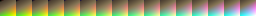
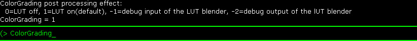
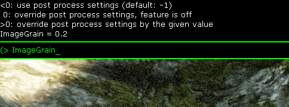

UDN
Search public documentation:
ColorGradingCH
English Translation
日本語訳
한국어
Interested in the Unreal Engine?
Visit the Unreal Technology site.
Looking for jobs and company info?
Check out the Epic games site.
Questions about support via UDN?
Contact the UDN Staff
日本語訳
한국어
Interested in the Unreal Engine?
Visit the Unreal Technology site.
Looking for jobs and company info?
Check out the Epic games site.
Questions about support via UDN?
Contact the UDN Staff
颜色分级后期处理特效功能
 |
| 这些图片展示了具有不同颜色分级的同一个场景。 |
概述
色调映射器
 这是使用的函数：
这是使用的函数：
GammaColor = LinearColor / (LinearColor + 0.187) * 1.035;注意明亮的颜色渐渐地变得更亮，但是要比暗颜色变亮的程度小得多。黑色仍然是黑色，并且会曲线有一个几乎呈现线性部分会比没有进行色调映射的曲线变得更加陡峭。那会导致提高对比度。当使用色调映射器时这是正常的，并且会获得一个不同的外观，为了获得更好的结果，源图片需要在亮度上更加具有动态性(更高的HDR)。这可以呈现出更加真实的电影效果。 现在呈现的映射公式已经有了两个可调整的常量，并且可以使用更加多的数学公式来进行进一步的调整，但是找到一个好的函数不像我们需要考虑的 质量/灵活性/性能 那么简单。我们决定坚持使用简单的公式，并使用简单的颜色查找来修改得到的LDR颜色。因为我们已经把HDR颜色映射到了一个有限范围内，所以我们可以获得更多的暗颜色的表现方式并且也可以修改明亮的颜色。这个方法是很容易理解的，它提供了在局部控制上提供了很大的灵活性，并且几乎可以保持不变的性能。 您可以通过在编辑器中选择 Filmic(电影效果) 类型来启用颜色映射器(PostProcessChain / UberPostProcess)。您也可以选择色调映射器类型。有另外一个 Customizable(自定义) 色调映射器，它的工作方式和 Filmic 类似。该*Customizable(自定义)* 色调映射允许您将色调映射器曲线的底部和线性曲线相混合(就像没有 色调映射器 /线性映射 一样 )。通过这种方法您可以控制暗色受到色调映射器的影响程度。但注意这个色调映射器在渲染性能方面会稍微慢些。
颜色校正
我们通过查找表格来实现颜色校正。我们决定不使用3个1维的查找表格而是使用一个3维的查找表格，因为这为我们提供了更加复杂的颜色变换(比如,颜色冲淡)。以下图片显示了16x16x16中性色LUT (查找表格)展开为一个256x16的贴图(现在贴图浏览器中看到的这个贴图)：(请不要从网站浏览器中复制这个图片, 请右击这里并选择 Save link as（链接另存为）... : RGBTable16x1.png) 修改后的贴图可能如下所示：

为了使用LUT,您需要在您要使用的后期处理体积中分配LUT贴图。
创建LUT贴图的流程
过程：可以进行各种颜色校正。这里是几个示例：
- 获得您想调整的场景的具有代表性的屏幕截图，把它们放到一个Photoshop文档中。
- 加载中性色的 256x16 LUT到Photoshop中(您可以从这个页面获得RGBTable16x1.png图片)。请不要复制或粘帖，请右击这里并选择 Save link as（链接另存为）... ： RGBTable16x1.png)
- 把LUT插入到具有屏幕截图的Photshop文档中（在LUT文档中选择所有、复制、切换到屏幕截图文档、粘帖)。
- 应用颜色处理操作(最好通过添加调整层来实现，否则您需要提前使得所有东西都变平，然后切出256x16大小的图片，这会变得更加复杂 )。
- 选择该256x16 LUT (在图层菜单中选择LUT层，菜单: 选择/加载 选中项, 确定)。
- 复制融合的LUT内容。（菜单： Edit/Copy Merged（编辑/复制 融合的内容）)
- 以引擎可以读取的某种未压缩格式粘帖并保存那个256x16的贴图。(菜单： File/New（文件/新建）, 菜单: Edit/Paste（复制/粘帖）, 菜单: File/Save As(文件/另存为))
- 在编辑器中导入那个贴图，然后指出ColorLookupTable作为贴图组。
- Brightness(亮度)
- Saturation(饱和度)
- 简单的对比度(具有区间限定的线性变化)
- 较高质量的对比度(比如，在中间部分具有比较陡峭的线性部分的曲线)。
- 选择性地修改图片的暗处、中间色调及亮处区域(比如，曲线)。
- 选择性地修改特定的颜色(最好在同一个颜色空间内展现，亮度在一个单独的通道中，比如LAB)。
- 甚至可以在不同的颜色空间进行调整(比如，LAB可以使得亮度和颜色相互独立，这是非常有用的)。
不同的LUT贴图间的混合
在游戏中，贴图会随着时间(用于之前颜色校正的同一个值)自动地混合。多个LUT之间混合的性能影响是很小的。把数学上的颜色调整和LUT贴图结合起来
很久以前，后期处理便允许通过固定的公式(阴影、中间调、高亮、饱和)进行颜色校正，但是数学函数可以对屏幕上的每个像素进行校正。通过使用3D查找表格，当颜色混合后，我们可以把颜色变换集成到表格中。基于每帧的数学操作的量是很少的，因为后期处理是一个需要大量数学操作(ALU)的着色器，所以我们可以获得较好的速度提升。以后的改进
现在我们直接地把查找表格贴图导入为一个256x16的贴图。这并不是非常直观的，很难向那些没有经过训练的人解释这个图片。一些可视化的曲线或简单的图像可以更加清楚地展示对图片所作的处理。当我们悬停于内容浏览器的那项上时，我们甚至可以在当前视图上预览它的效果。图像颗粒感
一旦激活 Image Grain(图像颗粒感) ，您可以看到可以改变图像颜色的某种噪声(在颜色分级处理之前)。这个噪声仅影响亮度。 使用它可以使得场景更具有电影一样的效果。这个噪声仅影响暗处，影响强度可以调整(1是最大值，但该值达到0.2才有效)。有少量噪声总是存在(即使比例为0)，它们影响整个颜色范围。这可以辅助改进质量。在内部，颜色在每个通道中一般是以8位进行处理的，那点噪声可以隐藏由此导致的条带失真。
控制台变量
控制台变量 TonemapperType 可以用于在不同的色调映射器类型之间切换。控制台变量 ColorGrading 可以用于调试混合或者查看当前使用的是哪个LUT贴图。

控制台变量 ImageGrain 可以用于调整图像颗粒感设置。
限制
- 使得每个颜色轴上仅有16个不同的值仅近似了在图像处理工具（比如Photoshop）中的已经进行的颜色操作. 同时，在某些硬件上可能仅限制具有256个输出值(比如，10位的DAC)。
- 由于性能原因，我们不对着色器中的LUT(8个查找表项)进行插值，而是使用贴图过滤硬件作为替换。在老的硬件上(比如pre D3D10)，那有限的精确度是显而易见的。
- 对于分割屏幕来说，每个视图都应该有它自己的LUT混合。
- 带权重的混合对于在LUT之间的淡入淡出是很好的，但是有时候使用层特效是很好的(比如，在环境LUT上的红色的色彩)。实现那个处理是非常简单也是很危险的。这样在混合的过程中需要依赖的贴图查找表，那样可能会导致产生严重的条带(想象一下是一个图片变淡然后再使它变为饱和状态的情况)。每个坐标轴上仅有16个表格元素事实上会严重地影响质量。因为前一个数学颜色校正仍然存在，所以可以使用它作为一个单独的程序上的层。
移动设备支持
移动设备平台上不支持基于LUT的颜色分级。但是，自从2011年12发布的虚幻引擎3开始，提供了一个简化的基于公式的颜色分级实现，允许内容制作人员控制在移动平台上渲染的场景的不饱和度、高光的颜色外观、中等色调及阴影。为了方便使用，我们向 WorldInfo 和 PostProcessVolume 类别的后期处理设置中添加了一组新的配置属性。但是，请记住，这些属性是以完全独立的实现方式进行使用的，是针对移动设备平台的，和PC及游戏机平台上熟悉的后期处理链没有关系。配置
默认情况下，移动设备颜色分级功能是禁用的。要想启用该功能，请在游戏的 BaseEngine.ini 配置文件的 [SystemSettings] 部分中设置MobileColorGrading=True。 颜色分级效果的视觉效果是通过在关卡编辑器中的设置进行控制的。 WorldInfo 类在其 Default Post Process Settings(默认后期处理设置) 下的 Mobile Color Grading(移动设备颜色分级) 属性中存放了地图的默认颜色分级设置。类似地， PostProcessVolumes(后期处理体积) 在他们的一般设置中具有同样的属性集。后期处理体积可以嵌套，并且当相机进入到这些体积时可以应用它们各自的颜色分级效果。到书写本文为止还不支持体积变换之间的平滑混合，但以后可能添加这个功能。 以下列表描述了每个设置：
- Blend(混合) - 决定了颜色分级混合到最终场景的程度。值0.0 (默认)意味着禁用颜色分级，没有效果；而值1.0将会对该场景应用100%的颜色分级效果。
- Desaturation(不饱和度) - 决定了最终场景中颜色的不饱和度的多少。值0.0 (默认)将不会应用不饱和处理；而值 1.0将会对图像应用完全的不饱和处理(也就是，将其转换为灰度图)。
- High Lights(高光) - 控制场景中明亮像素的颜色修正。
- Mid Tones(中间色调) - 控制中间色调上的颜色修正。
- Shadows(阴影) - 控制场景中暗色像素的颜色修正。
公式
上面的设置应用于硬编码到移动设备的GLSL着色器中的计算中，可以在 Engine/Shaders/Mobile/Prefix_PixelShader.msf 找到及修改移动设备着色器文件。虚幻材质编辑器也包含了等价实现，就是 MobileEngineMaterials 内容包中的 MobileColorGrade 材质功能，它提供了颜色分级功能内部工作原理的可视化表示。 但是，需要记住的很重要的一点是这个材质功能仅用于编辑器中的Mobile Emulation(移动设备仿真)功能，他在实际的移动设备上没有影响。如果对GLSL着色器文件和材质功能中的任何一个进行了修改，推荐您也修改另外一个以保持着两个设置同步。
链接
- 使用查找表加速颜色变换 由 Jeremy Selan书写，GPUGems 2。